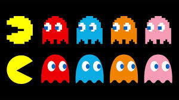
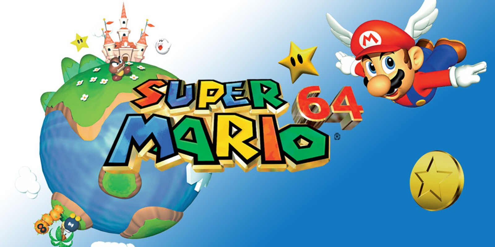

Minecraft

Minecraft foi criado pelo markus persson conhecido como "notch" o jogo foi lançado em 2009, minecraft tem uma historia simples onde seus objetivos e explorar o mapa contruir vilas e deixar sua imaginaçao fluir com o mundo aberto!!
Pac-man

Lançado em 22 de maio de 1980 pela Namco no Japão, Pac-Man foi criado por Toru Iwatani com o objetivo de inovar, criando um jogo focado em "comer" e não em tiroteios, inspirando-se no formato de uma pizza sem uma fatia
Super mario 64

O jogo super mario 64 foi um dos mais importantes da hitoria dos games, porque foi um dos primeiros jogos em 3D totalmente livres. Ele foi criado pela nitendo e lançado em 1996 junto com console Nintendo
Injustice Gods Among Us
Injustice: Gods Among Us foi lançado oficialmente em 16 de abril de 2013 na América do Norte e Brasil. O jogo de luta da DC Comics, desenvolvido pela NetherRealm Studios, chegou posteriormente à Europa e Austrália em 19 de abril de 2013, disponível para PlayStation 3, Xbox 360 e Wii U.
Street fighter 2
Street Fighter II: The World Warrior foi lançado pela Capcom em 6 de fevereiro de 1991 para arcades (fliperamas). Desenvolvido por Yoshiki Okamoto e Akira Yasuda, o jogo revolucionou o gênero de luta, vendendo milhares de máquinas mundialmente e consolidando-se como um dos maiores ícones da cultura pop e dos jogos eletrônicos.